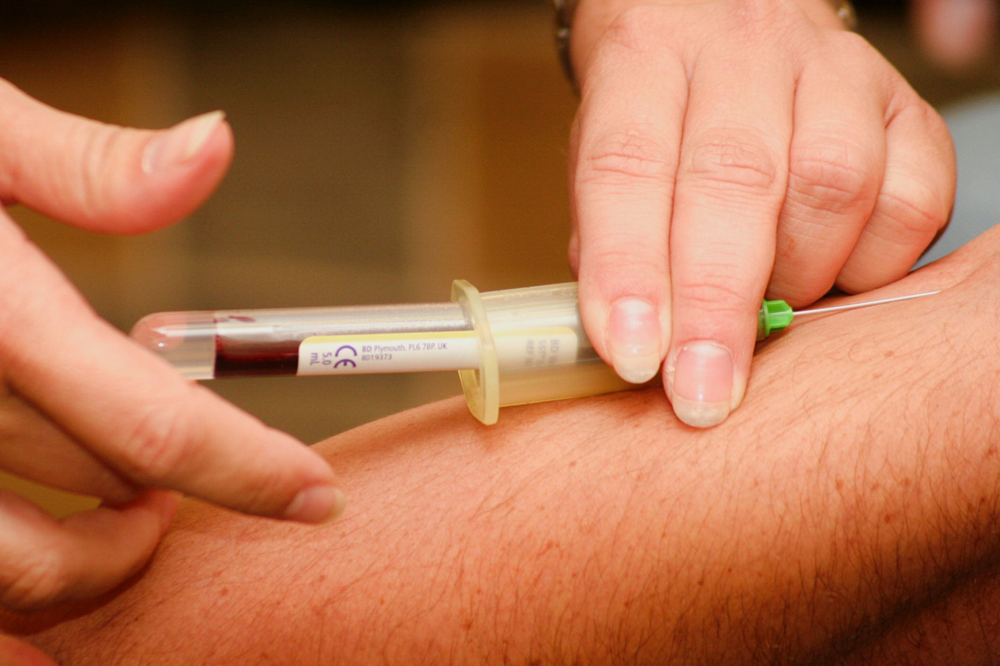
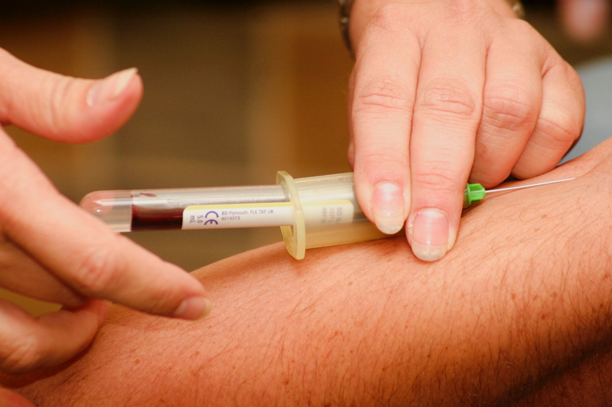
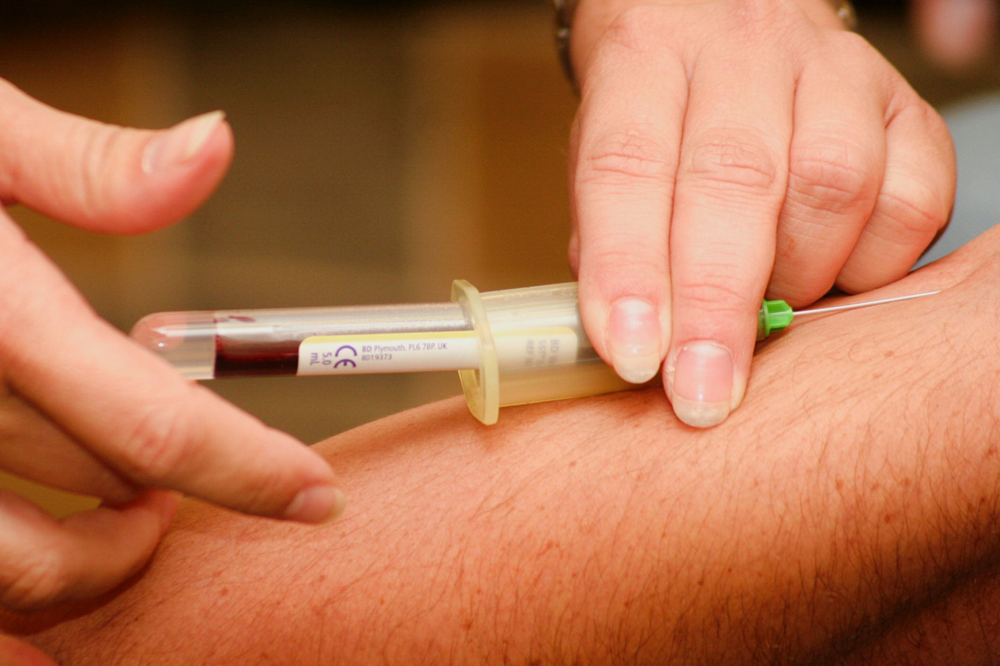

Hausarztpraxis Farchant
Partnachstraße 2
82490 Farchant
Telefon: +49 8821 6762
Telefax: +49 8821 61768
E-Mail-Adresse:
info@hausarztpraxis-farchant.de
Auf Grund der aktuell sehr hohen Anfragen bitten wir Sie um Geduld bei der telefonischen Kontaktaufnahme.
Eine Emailkontaktanfrage wird zeitnah beantwortet.
Für Rezeptanfragen für Folgeverordnungen schicken Sie uns bitte
eine E-Mail an
info@hausarztpraxis-farchant.de
mit den folgenden Informationen:
Außerhalb der Sprechzeiten kontaktieren Sie bitte den ärztlichen Bereitschaftsdienst unter der Telefonnummer 116/117, in Notfällen wählen Sie 112.
Hausarztpraxis Farchant
Partnachstraße 2
82490 Farchant
Telefon:
+49 8821 6762
Telefax:
+49 8821 61768
| Montag | 08.00 - 12.00 | | | 16.00 - 18.00 |
|---|---|---|---|
| Dienstag | 08.00 - 12.00 | | | 16.00 - 18.00 |
| Mittwoch | 08.00 - 12.00 | ||
| Donnerstag | 08.00 - 12.00 | | | 16.00 - 18.00 |
| Freitag | 08.00 - 14.00 |
| Montag | 08.00 - 12.00 | | | 16.00 - 18.00 |
|---|---|---|---|
| Dienstag | 08.00 - 12.00 | | | 16.00 - 18.00 |
| Mittwoch | 08.00 - 12.00 | ||
| Donnerstag | 08.00 - 12.00 | | | 16.00 - 18.00 |
| Freitag | 08.00 - 14.00 |
Um lange Wartezeiten zu vermeiden, bitten wir Sie um Terminvereinbarung
+49 8821 6762
Hausarztpraxis Farchant
Partnachstraße 2
82490 Farchant
Telefon:
+49 8821 6762
Telefax:
+49 8821 61768
